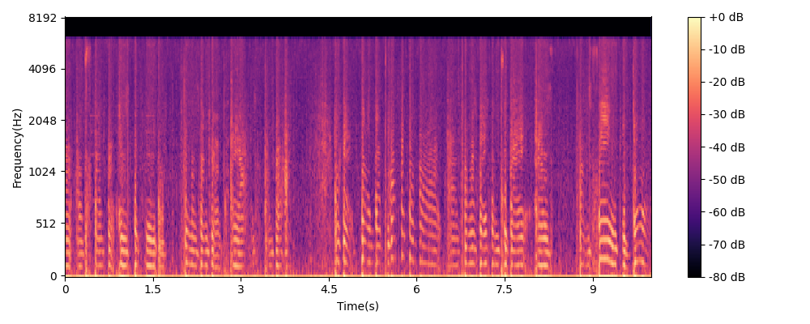
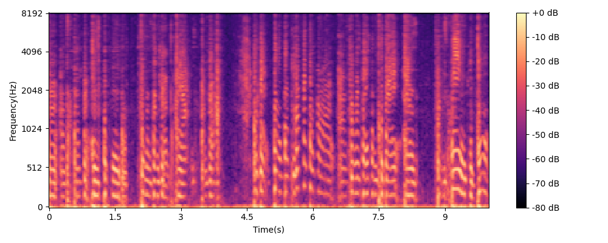
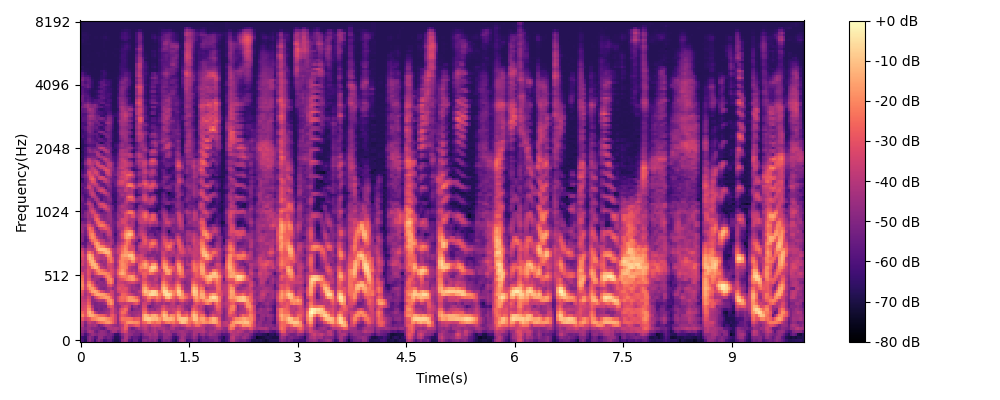

PowerEar is an acoustic eavesdropping attack that leverages the power side channel to reconstruct any audio reproduced by the built-in speaker of a mobile device, with a non-constrained vocabulary. Our approach relies on a combination of signal processing and generative artificial intelligence techniques to learn the mapping between power consumption and audio playback, enabling the reconstruction of such audio through spectrogram enhancement. Figure 1 provides a overview for the PowerEar system. For additional details refer to the paper.
Fundamentals of human speech and audio-induced power traces
Typically, the fundamental frequencies of the human voice range from 300Hz to 3.4kHz. The English language has a total of 48 phonemes that can be bisected into 20 vowels and 28 consonants. As we can observe in the figures, vowels have their main frequency components below 2kHz (see Figure 2a) while labial and fricative consonants can reach frequencies up to 8kHz (see Figure 2c).
The built-in speaker of a mobile device causes current fluctuations that are related to the audio played. Therefore, we measure the resulting power traces, for which we report the spectrograms of the vowels in Figure 2b and the consonants in Figure 2d.

(2a) Audio of vowels 
(2b) Power trace of vowels |

(2c) Audio of consonants 
(2d) Power trace of consonants |
- 2 - README file and source code
We provide the source code of our PowerEar framework at the following links:
- 3 - Examples of Original and Reconstructed audio with different devices
iPhone 11

(a) Spectrogram of Original Audio |

(b) Spectrogram of raw power trace |

(c) Spectrogram of de-noised power trace |

(d) Spectrogram of Reconstructed Audio |
Original Audio (left) and Reconstructed Audio (right), MCD:2.97 WER:9.8 MOS:3.28
iPhone 12

(a) Spectrogram of Original Audio |

(b) Spectrogram of raw power trace |

(c) Spectrogram of de-noised power trace |

(d) Spectrogram of Reconstructed Audio |
Original Audio (left) and Reconstructed Audio (right), MCD:2.59, WER:9.6, MOS:3.23